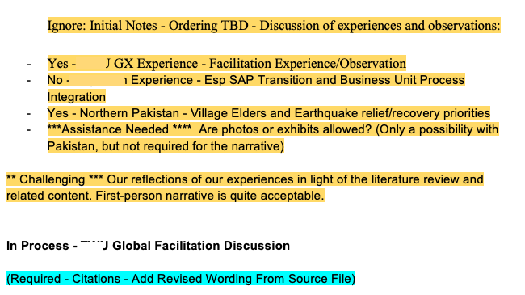

| Term | Course | Class Size | Responses | pct_good |
|---|---|---|---|---|
| FA 2024 | LDRS463/663 | 3 | 0 | NA |
| SP 2024 | LDRS663 | 4 | 3 | 67 |
| FA 2023 | LDRS663 | 6 | 1 | 100 |
| SP 2023 | LDRS663 | 1 | 0 | NA |
| SP 2022 | LDRS663 | 11 | 6 | 67 |
| SP 2022 | EDCI338 | 39 | 4 | 75 |
| FA 2021 | EDCI335 | 41 | 6 | 100 |
| FA 2021 | LDRS663 | 7 | 0 | NA |
| SU 2021 | LDRS663 | 7 | 3 | 33 |
| SU 2021 | EDCI335 | 40 | 9 | 100 |
| SP 2021 | LDRS663 | 7 | 0 | NA |
| FA 2020 | LDRS663 | 11 | 2 | 100 |
| SU 2020 | LDRS663 | 16 | 0 | NA |
| SU 2020 | EDCI339 | 59 | 3 | 33 |
| SU 2020 | EDCI335 | 56 | 3 | 100 |
| SU 2019 | LDRS663 | 3 | 0 | NA |
| SU 2019 | EDCI339 | 39 | 2 | 100 |
| SU 2019 | EDCI335 | 37 | 8 | 75 |
Colin Madland
1449 Green Bay Road West Kelowna, BC Canada
October 8, 2025
Search Committee Chair
Frazer Faculty of Education
Ontario Tech University
RE: Application for the Position of Assistant Professor, Assessment and Evaluation
Dear Search Committee,
Thank you for taking the time to review my application package for this role. I know it is a time intensive process, having led and been a part of numerous hiring committees. Please find enclosed my application to be considered for the Assistant Professor of Assessment and Evaluation position.
The following pages demonstrate that I have met the requirements to be successful in this position, including: experience in qualitative, quantitative and mixed methods research, an emerging record of high-quality publications, a history of successful funding applications, committment to exemplary teaching and graduate supervision, the ability to cultivate equitable, diverse, and inclusive research partnerships, and a history of open knowledge mobilization.
Having completed my Master of Education (Distance Education) at Athabasca University and doctoral coursework at the University of Victoria (in addition to courses from the University of British Columbia and the University of Alberta as part of the Western Dean’s Agreement), I have had an excellent foundation for advancing my research program in technology-integrated learning and assessment. My academic research has centred around assessment in technology-integrated environments, with a special focus on inclusive and relational practices to support all learners, and especially underserved populations (e.g., Indigenous, remote).
A key output from my dissertation research was the Technology-integrated Assessment Framework (TIAF) (Madland et al. 2024). The framework highlights the importance of integrating Indigenous knowledge systems and methodologies as well as a pedagogy of care in technology-integrated learning environments beginning during the instructional/learning design phase of course development. The Research Plan section below highlights key areas of research that flow from the TIAF, including operationalizing the framework for use as a tool to guide individual instructors or departments in exploring their approaches to technology-integrated assessment in higher education. Also included in this document are links to two recently published articles on the TIAF and two other outputs related to my scholarly work in Indigenous learning contexts and a proceeding that resulted from an experience I had with automated computer vision software.
The Teaching Statement section documents the courses I have taught since 2019, when I began my PhD studies. All of the courses that I have taught at the higher education level have been fully online and I completed my MEd in Distance Education through Athabasca University. Additionally, I have been employed full time since 2010 supporting online instructors, learners, instructional designers, course production professionals and media creators in creating, producing and delivering high-impact online learning experiences. In my personal assessment practice, I focus on relational approaches, such as regular oral assessment conversations and communication of progress using a proficiency scale. These methods prioritize equitable learning and transformation rather than transactional compliance.
Thank you again for taking the time to review my application package. If you have any questions, please do not hesitate to reach out via email (cmadland@uvic.ca) or by phone (1-778-257-3533).
Sincerely,
Colin Madland
Curriculum Vitae
Education
| Degree | Field | Institution | Date |
|---|---|---|---|
| Ph.D. | Technology-Integrated Assessment | University of Victoria | 2026 |
| M.Ed. | Distance Education | Athabasca University | 2014 |
| B.Ed. | Physical Education | University of Lethbridge | 2001 |
| B.A. | Physical Education | Trinity Western University | 1997 |
Certifications
- British Columbia Ministry of Education Teacher Regulation Branch
- Professional Certificate #L178396
- Alberta Education
- Permanent Professional Certificate #254651U
Employment History
| Dates | Position, Employer |
|---|---|
| 2024 - | Director, Technology-integrated Learning and Assessment, Trinity Western University |
| 2016 - 2024 | Manager of Online Learning and Instructional Technologies, Trinity Western University |
| 2019 - | Sessional Instructor, Trinity Western University |
| 2019 - 2022 | Sessional Instructor, University of Victoria |
| 2016 | Coordinator for Educational Technologies, Thompson Rivers University (Sessional ) |
| 2015 - 2017 | Open Education Research Fellow |
| 2010 - 2016 | E-Learning Facilitator, Thompson Rivers University |
| 2009 - 2013 | Research Assistant, Athabasca University |
| 2007 - 2010 | High School Teacher and Athletic Director, St. Ann’s Academy |
| 2005 - 2007 | English Teacher, Ogaki and Nagoya, Japan |
Refereed Journal Articles
- Madland, C., Irvine, V., DeLuca, C., & Bulut, O. (2024a). Developing the Technology-Integrated Assessment Framework. The Open/Technology in Education, Society, and Scholarship Association Journal, 4(1), 1–19. https://doi.org/10.18357/otessaj.2024.4.1.63
- Madland, C., Irvine, V., DeLuca, C., & Bulut, O. (2024b). Technology-Integrated Assessment: A Literature Review. The Open/Technology in Education, Society, and Scholarship Association Journal, 4(1), 1–48. https://doi.org/10.18357/otessaj.2024.4.1.57
- Madland, C., & Richards, G. (2016). Enhancing Student-Student Online Interaction: Exploring the Study Buddy Peer Review Activity. International Review of Research in Open and Distance Learning, 17(3). https://doi.org/10.19173/irrodl.v17i3.2179
Forthcoming
- Madland, C., Irvine, V., Bulut, O., & DeLuca, C. (In preparation). Exploring the Factor Structure of the Technology-Integrated Assessment Framework.
- Madland, C., Irvine, V., Bulut, O., & DeLuca, C. (In preparation). Impact of genAI Policies and Practices on Learners’ Experiences of Care in Higher Education Assessment.
Refereed Proceedings
- Madland, C., Irvine, V., DeLuca, C., & Bulut, O. (2024, June). Evolving our understanding of technology-integrated assessment: A review of the literature and development of a new framework. Open/Technology in Education, Society, and Scholarship Association at Congress of the Social Sciences and Humanities, Montreal, QC, CA. https://doi.org/10.18357/otessac.2024.4.1.393
- Cui, H., Irvine, V., Miller, M., & Madland, C. (2024). Creating Capacity for Digital Transformation of Education: Mode and Disciplinary Barriers in the Development of Highly Qualified Personnel. Proceedings of the Open/Technology in Education, Society, and Scholarship Association Conference. Open/Technology in Education, Society, and Scholarship Association Conference, Montréal, QC. https://doi.org/10.18357/otessac.2024.4.1.421
- Irvine, V., Paskevicius, M., Madland, C., McCue, R., & Roberts, V. (2022). Multi-Section Open Course Design: Design and Implications for Faculty, Sessional Instructors, and Learners. The Open/Technology in Education, Society, and Scholarship Association Conference, 2(1), 1–9. https://doi.org/10.18357/otessac.2022.2.1.419
- Madland, C., Ofosuhene, M., & Adkins, J. (2022). Digital Platforms and Algorithmic Erasure: What are the Implications? Open/Technology in Education, Society, and Scholarship Association at Congress of the Social Sciences and Humanities, Online. https://doi.org/10.18357/otessac.2022.2.1.137
- Irvine, V., Paskevicius, M., Madland, C., McCue, R., & Roberts, V. (2022). Multi-Section Open Course Design: Design and Implications for Faculty, Sessional Instructors, and Learners. Proceedings of the Open/Technology in Education, Society, and Scholarship Association Conference, 1–3. https://doi.org/10.18357/otessac.2022.2.1.419
- Madland, C., & Restoule, J.-P. (2021). Self-Determination in Indigenous Online Education. The Open/Technology in Education, Society, and Scholarship Association Conference, 1 (1), 1–7. https://doi.org/10.18357/otessac.2021.1.1.147
Refereed Presentations
- Madland, C., & Mitchell, J. (2025, June 5). Assessment for Equity: Openness and DEI in your Grading Architecture [50-min Workshop]. Open/Technology in Education, Society, and Scholarship Association Conference, Victoria, BC. https://cmadland.github.io/slides/posts/otessa25-grading/#/title-slide
- Madland, C., Irvine, V., DeLuca, C., & Bulut, O. (2025, June 6). Technology-integrated Assessment Scale [20-min Presentation]. Open/Technology in Education, Society, and Scholarship Association Conference, Victoria, BC. https://cmadland.github.io/slides/posts/otessa25-scale/#/title-slide
- Madland, C., Irvine, V., DeLuca, C., & Bulut, O. (2024, June). Evolving our understanding of technology-integrated assessment: A review of the literature and development of a new framework. Open/Technology in Education, Society, and Scholarship Association, Montreal, QC, CA. https://cmadland.github.io/blog/posts/deck-otessa24/#/title-slide
- Madland, C. (2023, June). Research? Which Research? Technology, Assessment, and Higher Education in Tension. Open/Technology in Education, Society, and Scholarship Association, Online.
- Madland, C. (2022, May). Assessment and Digital Technology in Higher Education: A Review of the Literature. Open/Technology in Education, Society, and Scholarship Association, Online. https://cmadland.github.io/decks/otessa22---assessment-and-digital-technology-in-higher-education.html#otessa22---assessment-and-digital-technology-in-higher-education
- Irvine, V., Paskevicius, M., Madland, C., McCue, R., Roberts, V. (2022, May). Multi-Section Open Course Design: Design and Implications for Faculty, Sessional Instructors, and Learners. OTESSA 2022, Online. https://otessa.github.io/2022/wedesday-may-18-2022.html#parallel-session-11.1-transitions-of-online-learning-and-teaching-pse-open
- Marjanovic, K., Golland, B., Madland, C. (2022, May). Share Access! Using Bookdown to Remove Barriers and Open Up Learning. OTESSA 2022, Online. https://otessa.github.io/2022/friday-may-20-2022.html#share-access-using-bookdown-to-remove-barriers-and-open-up-learning
- Madland, C., Ofosuhene, M., and Adkins, J., (2022, May). Digital platforms and algorithmic erasure: What are the implications? OTESSA 2022, Online. https://otessa.github.io/2022/tuesday-may-17-2022.html#digital-platforms-and-algorithmic-erasure-what-are-the-implications-practice-oriented
- Madland, C. (2021, September). Assessment Approaches in Higher Education. Let’s Talk about Teaching, Victoria, BC.
- Clark Gray, B., & Madland, C. (2021, June). Resisting Surveillance Technology. OTESSA 2021, Online. https://otessa.org/2021/abstracts/resisting-surveillance-technology/
- Madland, C., & James, H. (2021, June). Experiencing a cognitive apprenticeship in the context of co-designing and co-teaching an undergraduate course. OTESSA 2021, Online. https://otessa.org/2021/abstracts/experiencing-a-cognitive-apprenticeship-in-the-context-of-co-designing-and-co-teaching-an-undergraduate-course/
- Madland, C. (2021, May). Humanizing Assessment in Online Higher Education. OTESSA 2021, Online. https://otessa.org/2021/abstracts/humanizing-assessment-in-online-higher-education/
- Madland, C. (2021, May). Indigenous Digital Self-Determination. OTESSA 2021, Online. https://otessa.org/2021/abstracts/indigenous-digital-self-determination/
- Chan, K., Irvine, V., & Madland, C. (2020, July). Decentralized Synchronous Learning Pods For Learner Discourse and Community-Building: An Alternative to Breakout Rooms. Let’s Talk about Teaching, Victoria, BC.
- Irvine, V., James, H., Madland, C., & McCue, R. (2020, July). Teaching in the Open: Supporting Open Access Designs for Social Justice. Let’s Talk about Teaching, Victoria, BC.
- James, H., & Madland, C. (2020, July). Co-Designing and Co-Teaching an Online Course. Let’s Talk about Teaching, Victoria, BC.
- Madland, C., & Irvine, V. (2020, April 17). Self-Determination in Indigenous Online Education [Roundtable Session]. AERA Annual Meeting, San Francisco, CA. (Conference Canceled). http://tinyurl.com/vp8h3q8
- Madland, C. (2019, June). Indigenous and Open Education: A contradiction? CSSHE Conference, Vancouver, BC.
- Madland, C. (2017). Flexible Infrastructure to Support the Design and Delivery of Online Learning. ICDE World Conference for Online Learning, Toronto.
- Madland, C. (2016, November). The Open Advantage. Open Education, Richmond, VA.
- Hendricks, C., Jhangiani, R., & Madland, C. (2016, March). Experiences, perceptions, and outcomes of BC students using open textbooks: Research from the BC OER Research Fellows. BCcampus Festival of Learning.
- Madland, C. (2016a, February). Building Trust and Community with Initiative Tasks. Teaching Practices Colloquium, Kamloops, BC.
- Madland, C. (2016, February). Communities of Inquiry to Ignite Learning. Teaching Practices Colloquium, Kamloops, BC.
- Madland, C. (2016, April). Enhancing Learning through OER and Open Platforms. OER16, Edinburgh, Scotland.
- Madland, C. (2016, April). Exploring the Remix Hypothesis. Open Education Global Conference, Krakow, Poland.
- Madland, C. (2015, November). Open and Connected Faculty Development. Open Education, Vancouver, BC.
- Madland, C. (2014, February). Structured Student Interactions. Teaching Practices Colloquium, Kamloops, BC.
- Madland, C. (2014, May). Encouraging Deeper Approaches to Learning. Open Learning Faculty Members Workshop, Kamloops, BC.
- Madland, C. (2014, May). Structured Student Interactions. CNIE Conference, Kamloops, BC.
- Madland, C. (2013, September). Structuring Student Interactions in Online Distance Learning: Exploring the Study Buddy Activity. Athabasca University Graduate Students’ Conference, Edmonton, AB.
- Madland, C. (2012, February). Engaging Students with Video. Teaching Practices Colloquium, Kamloops, BC.
- Madland, C. (2012, May). Online Faculty Development. Southern Alberta Institute of Technology Faculty Showcase, Calgary, AB.
Non-Refereed Presentations
- Madland, C. (2012, May). Outside the Box Feedback with Adobe Acrobat. Open Learning Faculty Members Workshop, Kamloops, BC.
- Madland, C. (2011, October). Thinking Despite the Box: Designing Interaction in Blackboard. Teaching with Technology Series, Kamloops, BC.
- Madland, C. (2010, October). Twitter in Higher Education. Teaching with Technology Series, Kamloops, BC.
Media
- Krinsky, S., & Bosley, R. (October 8, 2024). Alt Grading in Physical Education, Canadian Grading Reforms, and Technology-Integrated Assessment: An Interview with Colin Madland (No. 65) [Podcast]. https://thegradingpod.com/episodes/65-alt-grading-in-physical-education-canadian-grading-reforms-and-technology-integrated-assessment-an-interview-with-colin-madland/
- Greene, T. (2020). Valerie Irvine and Colin Madland [Broadcast]. [Podcast]. https://www.spreaker.com/episode/valerie-irvine-and-colin-madland--23026170
Research Dissemination
- “Technology-Integrated Assessment in Higher Education”; Kigali, Rwanda; Uganda; and Pan-Africa Christian University, Nairobi, Kenya, November 2024
- “Self-Paced Learning in Higher Education”, Pan-Africa Christian University, Nairobi, Kenya, May 2023
- “What is Assessment”, TWU Faculty Professional Learning. March 2023 https://cmadland.github.io/decks/twu-faculty-professional-learning.html.
Research Funding
- BCcampus Research Fellowship, 2022 ($6000)
- University of Victoria Graduate Student Award, September 2019 ($5000)
- University of Victoria Graduate Student Award, September 2018 ($5000)
- TRU Open Learning Presentation Fund, April 2016 ($5000)
- Open Education Resources Research Fellow, Open Education Group, 2015-16 (5000 USD)
- Athabasca University Tim Byrne Memorial Scholarship (for academic excellence along with an outstanding thesis or project), nominated by the Centre for Distance Education, June 2014. ($1000)
- Athabasca University Student Travel Award, September 2013. ($800)
- Athabasca University Graduate Student Mission Critical Research Fund, April 2013. ($420)
- Athabasca University Access to Research Tools, April 2013. ($300)
Teaching Activities
Undergraduate and Graduate - All courses and sections were taught fully online.
| Year | Course | Title | Credit Hours/Units | Students |
|---|---|---|---|---|
| Summer 2019 | EDCI 335 | Learning Design | 1.5 | 37 |
| Summer 2019 | EDCI 339 | Open and Distributed Learning | 1.5 | 39 |
| Summer 2019 | LDRS 663 | Transformational Blended Learning | 3 | 3 |
| Summer 2020 | EDCI 335 | Learning Design | 1.5 | 56 |
| Summer 2020 | EDCI 339 | Open and Distributed Learning | 1.5 | 59 |
| Summer 2020 | LDRS 663 | Transformational Blended Learning | 3 | 16 |
| Fall 2020 | LDRS 663 | Transformational Blended Learning | 3 | 10 |
| Spring 2021 | LDRS 663 | Transformational Blended Learning | 3 | 7 |
| Summer 2021 | EDCI 335 | Learning Design | 1.5 | 40 |
| Fall 2021 | LDRS 663 | Transformational Blended Learning | 3 | 7 (All in Nigeria) |
| Fall 2021 | EDCI 335 | Learning Design | 1.5 | 41 |
| Spring 2022 | LDRS 663 | Transformational Blended Learning | 3 | 11 |
| Summer 2022 | EDCI 338 | Social Media and Personalized Learning | 1.5 | 39 |
| Spring 2023 | LDRS 663 | Transformational Blended Learning | 3 | 1 (DS) |
| Fall 2023 | LDRS 663 | Transformational Blended Learning | 3 | 6 (4 in Nigeria) |
| Fall 2023 | LDRS 663 | Transformational Blended Learning | 3 | 4 |
| Fall 2024 | LDRS 663 | Transformational Blended Learning | 3 | 1 |
| Fall 2024 | LDRS 463 | Transformational Blended Learning | 3 | 2 |
| Summer 2025 | LDRS 663 | Transformational Blended Learning | 3 | 1 |
| Summer 2025 | LDRS 463 | Transformational Blended Learning | 3 | 4 |
Curriculum Development Projects
- LDRS 101 - Learning in a Digital World
- LDRS 663 - Transformational Blended Learning
- EDCI 335 - Learning Design
- EDCI 339 - Distributed and Open Learning
- Teaching Online Effectively (TOnE)
- Online Teaching and Learning
- Online Facilitation Skills for Student Learning, Engagement, and Retention
- Course Management Strategies
- Online Student Success
Service
Reviewer
- Open/Technology in Education, Society, and Scholarship Association (OTESSA) Conference
- Open/Technology in Education Society, and Scholarship Association (OTESSA) Journal,
- International Review of Research in Open and Distributed Learning (IRRODL),
- Research in Learning Technology (ISSOTL)
- Teaching & Learning Inquiry
- International Journal of E-Learning and Distance Education
Committees
- Founding Board Member, Open/Technology in Education, Society, and Scholarship Association (OTESSA), 2019-present
- Faculty Professional Learning Committee, Trinity Western University, 2016-present
- Board of Directors, Canadian Network for Innovation in Education (CNIE), 2016-2018
- Chair, Thompson Rivers University Graduate Studies Committee of Senate, November 2015-April 2016
- Thompson Rivers University Graduate Studies Committee of Senate, November 2012 - November 2015
- Academic Planning and Priorities Committee of Senate, October 2015-April 2016
Awards
- Outstanding Service Award from Thompson Rivers University Open Learning, September 2012.
Professional Learning
- Coaching for Leaders, Smart + Savvy and Associates (2018)
- Interculturalizing the Curriculum, Thompson Rivers University (2015)
Research Plan
Educational assessment is at the heart of robust formal education systems and has been deeply impacted by both COVID-19 and by the broad emergence of generative artificial intelligence (genAI). My research program is focused, in the short-term, on quantitatively refining and operationalizing the TIAF in the context of emerging technologies, such as genAI and artificial/virtual reality (AR/VR). In the longer term, there is much work to be done to operationalize the refined TIAF by continuing to build a scale to be used to help individual educators, centres for teaching and learning, scholars of teaching and learning, and/or any other interested stakeholder to explore and understand the impacts of emerging technologies on assessment design and practice, and, by extension, to transform assessment practice in formal digital learning environments. The potential for transformative impact on education systems by paying attention to technology-integrated assessment is significant, as Ramsden claims, “assessment always defines the actual curriculum” (2003). I believe that transforming technology-integrated assessment practices is one of the most powerful levers we have in the drive to enable access to high quality higher education for all learners.
The TIAF comprises four primary constructs (assessment purpose, duty of care, technology acceptance, and measurement), each capable of supporting robust interdisciplinary quantitative, qualitative, and mixed-method investigations. Each of the four constructs is grounded in the 5 Rs of Indigenous education (respect, relevance, reciprocity, responsibility, and relationships) (Tessaro et al. 2018), making the TIAF a valuable tool for removing barriers to Indigenous learners and communities.
Questions that arise from the assessment purpose construct include investigating the impacts of AI use on the balance of assessment of/for/as learning in higher education practice. More specifically, emerging technologies including genAI and AR/VR, have provided opportunity for instructors to focus more on the process of learning and assessment for/as learning compared to the products of learning. The duty of care construct provides myriad opportunities for investigations into the ethics of genAI or AR/VR use and the ways in which it is important to prioritize human characteristics and relationships in education. Note especially the differential impacts on racialized learners and their challenges with using AI-powered remote proctoring services during the COVID-19 pandemic (see my proceeding that highlights my viral experience with this issue (Madland, Ofosuhene, and Adkins 2022)). At the same time, there are notable benefits for equity-deserving groups (e.g. neurodivergent learners) who may be able to leverage boutique, privacy-protecting genAI models to preview and refine their work prior to submission to an instructor. Duty of care is especially important to prioritize in Indigenous learning contexts where there is a long history of exploitation, extraction, and extermination in the context of education (see my proceeding based on exploring this issue (Madland and Restoule 2021)). The technology acceptance construct leads to questions about managing technological and pedagogical change in contexts with a focus on technology adoption by instructors. Lasting transformation of educational systems requires deep and careful work in managing change. My work as Director of Technology-integrated Learning and Assessment has given me clear insight and direct experience in managing and transforming educational systems and technological infrastructure at an enterprise level. This experience provides crucial context for my research into technology acceptance and adoption by the full breadth of stakeholders, from learners, to instructors, support staff, and senior administrators and board-level executives. Lastly, the assessment design construct offers many opportunities to consider pedagogical designs and architectures that maximize the impact of quality learning experiences. Too often, universal design for learning (UDL) is an afterthought or an add-on to existing educational and assessment designs, however in this framework, intentional focus is brought to bear on the up-front design of learning environments which are human-centred, equitable, inclusive, and accessible.
The TIAF as a whole and each individual construct described within present rich opportunities for research on learning through transformative digital systems. This wide variety of possible approaches to investigating emerging technologies in open, digital, and distance education leads to multiple opportunities for inclusive quantitative, qualitative, and mixed research collaborations for the benefit of all learners and particularly remote, rural, and Indigenous communities. Further, as the framework is embedded within the 5Rs of Indigenous education, there are multiple possibilities for collaborating with Indigenous scholars to explore these and other questions specific to Indigenous communities as we journey together towards reconciliation and renewal.
Funding
As a graduate of the Master of Education program at Athabasca University, I was honored with the Tim Byrne Memorial Scholarship for academic excellence and an outstanding thesis ($1000). I have also received funding from the Open Education Group ($5000 USD), the Thompson Rivers University Presentation Fund ($5000), two University of Victoria Graduate Student awards ($10,000 total), and a BCcampus Research Fellowship ($6000), all in support of my research.
To this point in my career, I have been completing my PhD part-time while engaged in a full-time career in higher education. This has left me with few options for finding funding (e.g, SSHRC funding is only recently available for part-time students, but I am no longer eligible because I am too far along in my program.) I look forward to being able to apply much more of my effort and energy into securing funding, not only through the Tri-Council agencies, but also through government, university, and other external sources. For example, I am privileged to have extensive background with the Technology Integration and Evaluation (TIE) Lab at the University of Victoria where I have been mentored in strategies for securing funding from agencies like the Canada Foundation for Innovation (CFI) which matches seed funding at a rate of 4:1. This would allow me to leverage start-up funds provided in this position and quadruple the financial impact of that initial funding. My supervisor and mentor used this strategy to raise $1.4 million ($780,000 from CFI, the largest amount at UVic) to support the development of the TIE Lab.
Knowledge Mobilization
As a rule, I endeavour to publish all my formal and informal research outputs under an open license and on the web. Below are two examples of these outputs. The first, and informal publication, emerged from my PhD coursework as a visiting student at the University of British Columbia. This publication is a critical family history, an in-depth exploration of one of my ancestors’ emigration from Norway to the USA, then to northern and central Alberta, and finally to British Columbia. The framework for this publication is the history of the treatment of Indigenous peoples throughout North America that opened the way for my great-grandfather to emigrate from Norway.
Madland, C. (2019). Critical Family History [Blog]. Colin M. Madland.
The second example of knowledge dissemination is related to a viral moment that I and a colleague experienced on Twitter (now defunct). This conference presentation and proceeding described our experiences with the facial detection algorithm on Zoom, which, when posted to Twitter, showed a related problem there.
Madland, C., Ofosuhene, M., & Adkins, J. (2022). Digital Platforms and Algorithmic Erasure: What are the Implications? OTESSA Conference 2022. OTESSA 2022, Online.
The original Tweet that set it all off is no longer available on X, but has been ported to BlueSky where it can be seen without the original context or replies.
Graduate Student Development
As a PhD candidate, I have not been in a position to mentor or supervise graduate students. That said, I am privileged to have been mentored by distinguished committee members from across Canada: Dr. Valerie Irvine (Supervisor, University of Victoria Director of the Technology Integration and Evaluation Research Lab and President of the Open/Technology in Education, Society, and Scholarship Association), Dr. Christopher DeLuca (Committee Member, Queen’s University Associate Dean of Graduate Studies), and Dr. Okan Bulut (Committee Member, Professor of Measurement, Evaluation and Data Science, University of Alberta and University of Alberta President’s Research Prize Recipient). Each of these mentors has modelled high standards of academic excellence comibined with both support and trust as appropriate. This blend of personal mentoring and adherence to academic excellence has given me a template from which I can build my own practice of mentoring graduate students.
In my role of Director of Technology-Integrated Learning and Assessment, I have the privilege of supervising multiple early career educational technologists, several of whom have since started their journeys through masters and doctoral programs. As such, I have had the opportunity to informally mentor these people as they know that I am nearing completion of my program and seek out my advice. I know from these less formal encounters that each graduate student brings their own experiences, strengths, challenges, and fears to their programs, necessitating a personalized approach for each one.
Teaching Statement
Philosophy of Teaching and Learning
In my research and practice of teaching and learning in higher education, I ground my work in three broad principles related to who learners are, what teachers do, and how teachers know what learners know.
Who Learners Are
Those who seek to learn to improve themselves and the world around them have inherent dignity and value.
This principle is expanded in the 5 Rs of Indigenous education (Tessaro et al. 2018): respect, responsibility, relevance, reciprocity, and relationships. The 5 Rs serve as a set of values grounded in the inherent value of all people and the importance of intentional work to foreground the perspectives of equity-deserving groups. When diversity, equity, and inclusion are prioritized and co-created, the entire community of learners benefits from working in an environment where it is safe to be different or wrong. The ultimate goal of education is to empower learners to fully realize their purpose and to flourish in their efforts to improve the world around them.
This principle is reflected in the structure of my courses where learners are always able to make meaningful choices about how their learning will be demonstrated. For example, assignments are always grounded in the course learning outcomes, and they require learners to apply the concepts of the course to their own context. It is the learner who determines relevance, and it is through the relationships developed in the context of the course community that relevant learning is expressed. Respect and reciprocity are demonstrated in the process of co-creating a community of inquiry where all members share the responsibility for the safety and well-being of others. The key to making this all happen is that I host assessment conversations with learners where we meet to discuss their work and come to a mutually agreeable assessment of the quality of their work in light of the course outcomes.
One learner in my class reflected on their experience during LDRS 663 in their final paper (some details are omitted for anonymity):
Reflecting on these experiences, I’ve come to realize that transformational learning through coaching and facilitation is not simply a collection of tools; it is a deeply transformative mindset rooted in empathy, openness, and a commitment to critically engaging with deeply held beliefs. This mindset has profoundly reshaped my … identity, broadening my understanding of what it means to lead a … community. It challenges the notion of … authority as merely instructive, moving it instead toward a collaborative, relational approach that invites people into a shared journey of growth and exploration. Through this lens, my purpose has evolved into guiding our [community] toward a new understanding of inclusivity—not as a trend, but as an essential … value grounded in love, curiosity, and respect for diverse perspectives.
What Teachers Do
Learning is idealized as a cognitive apprenticeship which supports the process of sense-making in the context of complex ideas.
We know from Bloom (1984) that the most profound learning experiences occur in the context of sustained discourse between a learner (or maybe two or three) and an instructor (who can sometimes be a peer or other interested observer). This sense-making process must include the learner actively drawing connections between ideas and drawing conclusions that are relevant to their own contexts. Sense-making is often a difficult and tentative process, so it is incumbent on the instructor to allow learners to do the work of learning and to recognize that not all learners will achieve at the same pace. Learners exercise autonomy and agency when they are encouraged to exercise evaluative judgement (Tai et al. 2018) through the comparison of their own work to the work of both novice and expert others and to the intended learning outcome. The task of assessment is a similar process of the instructor making sense of what the learner has demonstrated in their process and the products of their work.
This principle is realized in my online courses in how I structure discourse, or the conversation around course concepts. Learners are required to demonstrate their process of coming to understand a topic or task, not only submit a final product. A ‘discussion forum’, which may use various platforms such as blogs or social media, in any of my courses is considered to be required, but not graded. The discussion forum is not graded because I want my learners to be free to express tentative or controversial ideas without fear of losing marks. Much like conversations inside the four walls of a brick-and-mortar classroom, which are not graded for accuracy, conversations in an online forum should be considered as works-in-progress as learners make sense of concepts and ideas. For graded assignments, learners are required to submit their working documents in addition to the final, polished version.
An example is this anonymized exerpt from a group project final submission.

Assessment conversations are a key component of allowing me to come to understand what the learner knows or can do. By having a conversation that includes talking about their working docs and the final product, I can get a clearer picture of the learner’s ability, I can ask clarifying questions in the moment, and the learner can provide valuable context to their work.
How Teachers Know What Learners Know
If there is an end, it is when the teacher has become unnecessary.
Coming to know something (learning) is a result of what we do. When learners strive for a cognitive goal, they iterate based on their past knowledge combined with feedback they receive regarding their performance in relation to the goal (Carless 2019; Hattie and Timperley 2007). Consequently, learning is inextricably tied to the process of assessing learning. Traditional models of learning require significant time and effort on the part of instructors who are the primary source of feedback in the process. Contrary to that, when a learner is able to generate their own feedback on performance, they are no longer completely reliant on the instructor and can sustain and direct their own learning (Boud and Soler 2016). I believe this should become the primary and overarching goal of higher education institutions, to produce self-sustaining learners who work and live in communities of inquiy for the good of the world.
An example of how this is realized in my courses is that learners are free to choose their domains of inquiry in alignment with the intended outcomes of the course. One of the outcomes in EDCI 335 is
Identify and evaluate various digital, networked, and open technologies and understand how they impact the learners and the learning process
Learners have meaningful options when it comes to meeting this objective. They can demonstrate their knowledge by creating a short learning experience using a Notion site where participants are led through a lesson in Gender and Mental Health, as below:

Or, in LDRS 463, they may use Obsidian to highlight their sense-making processes using tags and a concept map.
By encouraging learners to customize their outputs and review each others’ work, they are allowed to engage in work that is more relevant to their own lives, and more likely to be able to sustain their learning after my course has completed.
The most effective process of me coming to know what the learner knows is to schedule 10-15 minute synchronous assessment conversations with learners where they present their work. I thus have the opportunity in the moment to probe their thinking about their work and to make a determination of the authenticity of their performance.
In summary, I believe that all learners have inherent rights and dignity, that teaching and learning is a relationship best described as a cognitive apprenticeship, and that meaningful work and conversations are the best ways to certify that learning has occured.
Teaching Interests
Teaching is a profound passion of mine, particularly when it allows me to apply my research findings in the classroom. My teaching experience includes junior and senior high school in both public and private high schools in BC and Alberta; internationally as an assistant language teacher in Japan; and in both undergraduate and graduate courses in higher education. I have taught a diverse range of subjects in grades 8-12, including physical education, digital media studies, outdoor education, sports medicine, science, English, and math.
At the University of Victoria, I co-designed and taught three online undergraduate courses: Learning Design, Distributed and Open Learning, and Social Media and Personalized Learning. These courses use WordPress as the primary hub of networked interactions, enabling students to personalize their web presence while acquiring critical digital literacy skills by engaging with the open web. (see my 2022 proceedings on multi-section course design (Irvine et al. 2022) as an example of how I share my practice in scholarly venues).
One of the highlights of my undergraduate teaching experience was co-designing and teaching in parallel with a fellow Ph.D. student during the early stages of the global COVID-19 pandemic. This collaborative process was mutually supportive and helped us navigate the complexities of teaching undergraduates in an innovative, technology-integrated context. Our experience is documented in a presentation at the OTESSA21 conference at the Congress of the Social Sciences and Humanities. I also co-designed and taught Coaching for Transformational Blended Learning, a course in the Graduate Certificate in Adult Learning: Coaching and Facilitation at TWU. This course takes an experiential approach to coaching individual learners and facilitating group processes in educational contexts. At the undergraduate level at TWU, I collaborated with an instructional designer to create an introductory online course called Learning with Technology which enrolled its first learners in the Fall of 2024. This course helps learners understand the affordances of technology for sense-making in learning environments by teaching them a technology-integrated workflow that maintains their personal privacy and teaches learners how to build networks of knowledge and learning using Obsidian, Zotero, and WordPress.
Teaching Effectiveness
The following is a table summarizing courses I have taught, including a synopsis of learner ratings of their experience with me as their instructor. Note that several courses did not meet the threshold for reporting ratings as there were too few submissions of learner experience surveys.
Efforts to Improve Teaching
Early in my higher education teaching career, there was a pattern of learners not being satisfied with my feedback practices. As I grew as an instructor in online environment, I began implementing more relational assessment and feedback practices as outlined in my teaching philosophy statement. One change that I have consistently implemented since those early efforts is being more intentional and explicit about the connections between the intended learning outcomes in the course and the assessment tasks required of learners. I have found that when learners are more aware of those connections, there is greater willingness to engage in the acivities that lead to success in learning. Further, when there are clear connections between intended outcomes and assessment activities, I can be explicit about any areas that may require further work and help learners bridge any gaps between their ability and the intended outcomes. The final area of growth in my teaching has been the implementation of assessment conversations which provide opportunity for a more relational approach to assessment. Learners have told me that this approach, while different from their previous experience, has allowed them to be more comfortable in exploring ideas tentatively rather than hoping that they produce the ‘correct’ answer. These approaches and strategies were informed by my dissertation work on the Technology-integrated Assessment Framework.
Pedagogical Innovations
In January 2022, I trialled an online course structure built on GitHub for learner contributions and WordPress for learner reflections, which allowed me to track more closely the work that learners were doing and who was contributing to cooperative projects. While there was a longer period of time required to ensure that all learners were comfortable using the platforms, it proved to be useful as an exploration of how openness can be realized in online learning environments. The end result of the course was a co-created website with leaerner contributions clearly visible and my interatctions in the asynchronous environment recorded. Please feel free to explore the site. Note that it is unchanged since the end of the course.
Publications Focused on Assessment and Evaluation
Please see the following articles I published in the OTESSA Journal (May 2024):
Madland, C., Irvine, V., DeLuca, C., & Bulut, O. (2024). Technology-Integrated Assessment: A Literature Review. The Open/Technology in Education, Society, and Scholarship Association Journal, 4(1), 1–48. Google Scholar Citations
Madland, C., Irvine, V., DeLuca, C., & Bulut, O. (2024). Developing the Technology-Integrated Assessment Framework. The Open/Technology in Education, Society, and Scholarship Association Journal, 4(1), 1–19. Google Scholar Citations
References
Bloom, Benjamin. 1984. “The 2 Sigma Problem: The Search for Methods of Group Instruction as Effective as One-to-One Tutoring.” Educational Researcher 13: 4–16.
Boud, David, and Rebeca Soler. 2016. “Sustainable Assessment Revisited.” Assessment & Evaluation in Higher Education 41 (3): 400–413. https://doi.org/10.1080/02602938.2015.1018133.
Carless, David. 2019. “Feedback Loops and the Longer-Term: Towards Feedback Spirals.” Assessment & Evaluation in Higher Education 44 (5): 705–14. https://doi.org/10.1080/02602938.2018.1531108.
Hattie, John, and Helen Timperley. 2007. “The Power of Feedback.” Review of Educational Research 77 (March): 81–112. https://doi.org/10.3102/003465430298487.
Irvine, Valerie, Michael Paskevicius, Colin Madland, Rich McCue, and Verena Roberts. 2022. “Multi-Section Open Course Design: Design and Implications for Faculty, Sessional Instructors, and Learners.” In Proceedings of the Open/Technology in Education, Society, and Scholarship Association Conference, 1–3. Online. https://doi.org/10.18357/otessac.2022.2.1.419.
Madland, Colin, Valerie Irvine, Chris DeLuca, and Okan Bulut. 2024. “Developing the Technology-Integrated Assessment Framework.” The Open/Technology in Education, Society, and Scholarship Association Journal 4 (1): 1–19. https://doi.org/10.18357/otessaj.2024.4.1.63.
Madland, Colin, Maxwell Ofosuhene, and Jennifer Adkins. 2022. “Digital Platforms and Algorithmic Erasure: What Are the Implications?” In OTESSA Conference 2022. Online: Open/Technology in Education Society and Scholarship Association. https://doi.org/10.18357/otessac.2022.2.1.137.
Madland, Colin, and Jean-Paul Restoule. 2021. “Self-Determination in Indigenous Online Education.” The Open/Technology in Education, Society, and Scholarship Association Conference 1 (1): 1–7. https://doi.org/10.18357/otessac.2021.1.1.147.
Ramsden, Paul. 2003. Learning to Teach in Higher Education. Routledge. https://doi.org/10.4324/9780203507711.
Tai, Joanna, Rola Ajjawi, David Boud, Phillip Dawson, and Ernesto Panadero. 2018. “Developing Evaluative Judgement: Enabling Students to Make Decisions about the Quality of Work.” Higher Education 76 (3): 467–81. https://doi.org/10.1007/s10734-017-0220-3.
Tessaro, Danielle, Jean-Paul Restoule, Patricia Gaviria, Joseph Flessa, Carlana Lindeman, and Coleen Scully-Stewart. 2018. “The Five r’s for Indigenizing Online Learning: A Case Study of the First Nations Schools’ Principals Course.” Canadian Journal of Native Education 40 (1): 125–43. https://www.researchgate.net/publication/328289320_The_Five_R%27s_for_Indigenizing_Online_Learning_A_Case_Study_of_the_First_Nations_Schools%27_Principals_Course.